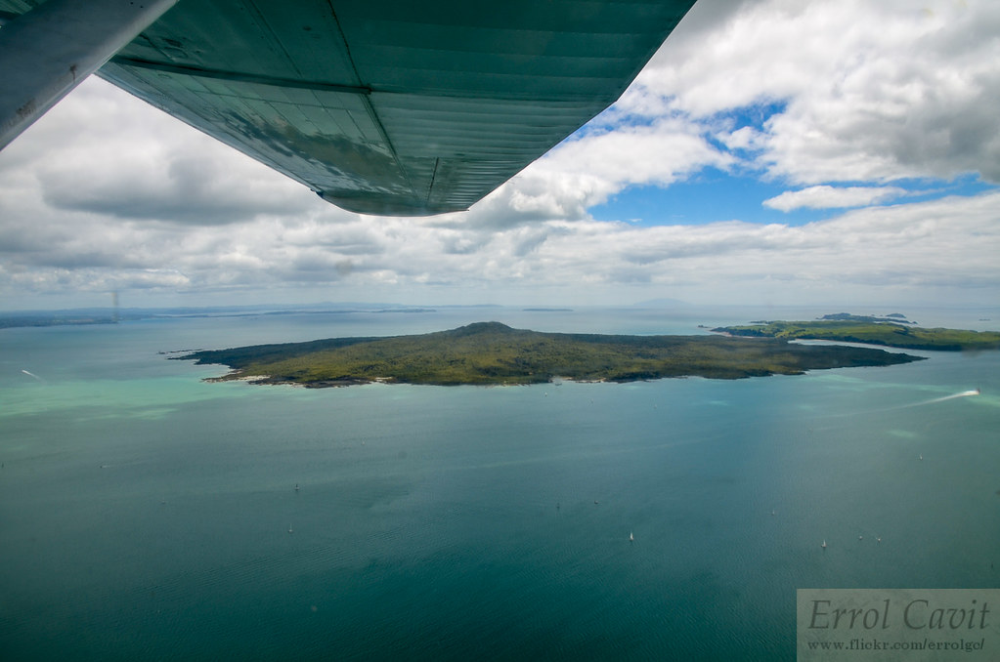

Pupkue Kahui Ako
Rangitoto Island is a volcanic island in the Hauraki Gulf near Auckland, New Zealand. The 5.5 km (3.4 mi) wide island is a symmetrical shield volcano cone capped by central scoria cones, reaching a height of 260 m (850 ft). Rangitoto is the youngest and larges t of the approximately 50 volcanoes of the Auckland volcanic field, having erupted in two phases about 1450 CE and 1500 CE and covering an area of 2,311 ha (5,710 acres). It is separated from the mainland of Auckland's North Shore by the Rangitoto Channel.
Rangitoto
The Waitematā Harbour is the main access by sea to Auckland, New Zealand. The harbour forms the northern and eastern coasts of the Auckland isthmus and is crossed by the Auckland Harbour Bridge. It is matched on the southern side of the city by the shallower waters of the Manukau Harbour.With an area of 70 square miles (180 km2), it connects the city's main port and the Auckland waterfront to the Hauraki Gulf and the Pacific Ocean.